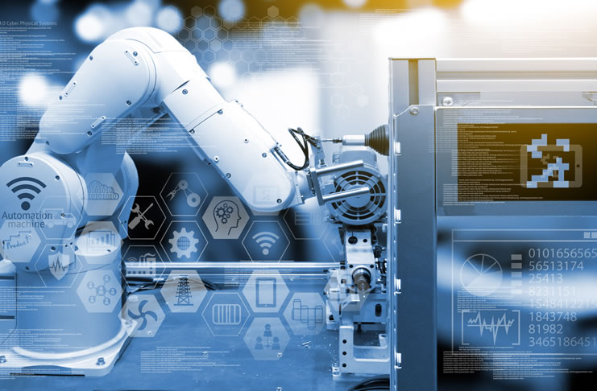

Industri 4.0
Revolusi Industri 4.0 adalah era saat ini, di mana teknologi seperti internet, komputerisasi, microchip, IOT, kecerdasan buatan (AI), machine learning, deep learning, cloud analytics, hingga kendaraan otonom merevolusi setiap proses produksi hingga distribusi, dengan fokus pada keberlanjutan (Sustainability).
Teknologi baru seperti ojek online, tarik tunai lewat ponsel, hingga warung digital bermunculan di era ini.